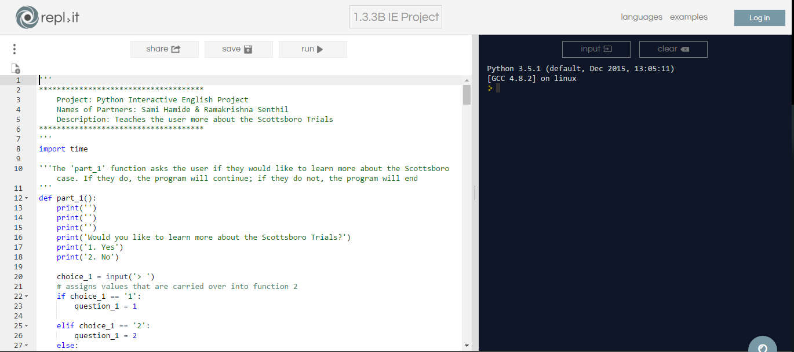
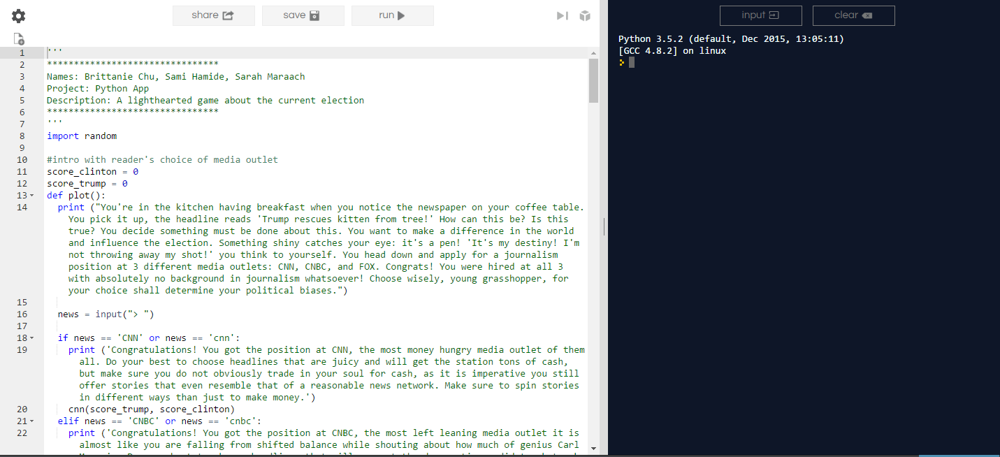
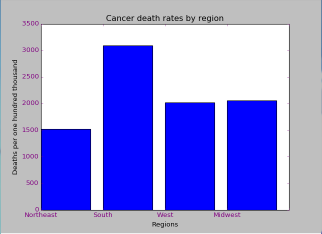
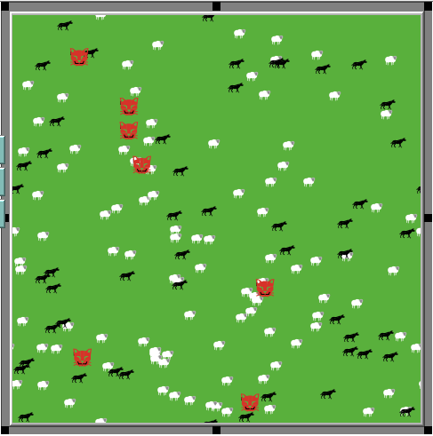

Object moves, then changes direction with the space bar
An interactive story in which a fictional professor describes fictional representations of the many worlds interpretation of quantum physics.
Click here to view the project backlog for this project
An interactive experience that discusses the events and underlying information of the Scottsboro Boys' trials, click the image above to experience it.
An interactive game that places users in the position of a reporter during the 2016 general presidential election
A data modelling project that compares the cancer deaths per one hundred thousand cases between regions of the United States
A modification of the wolf sheep predation model included in NetLogo. This model introduces the cougar, also known as the bobcat, a nautral predator of both sheep and wolves.